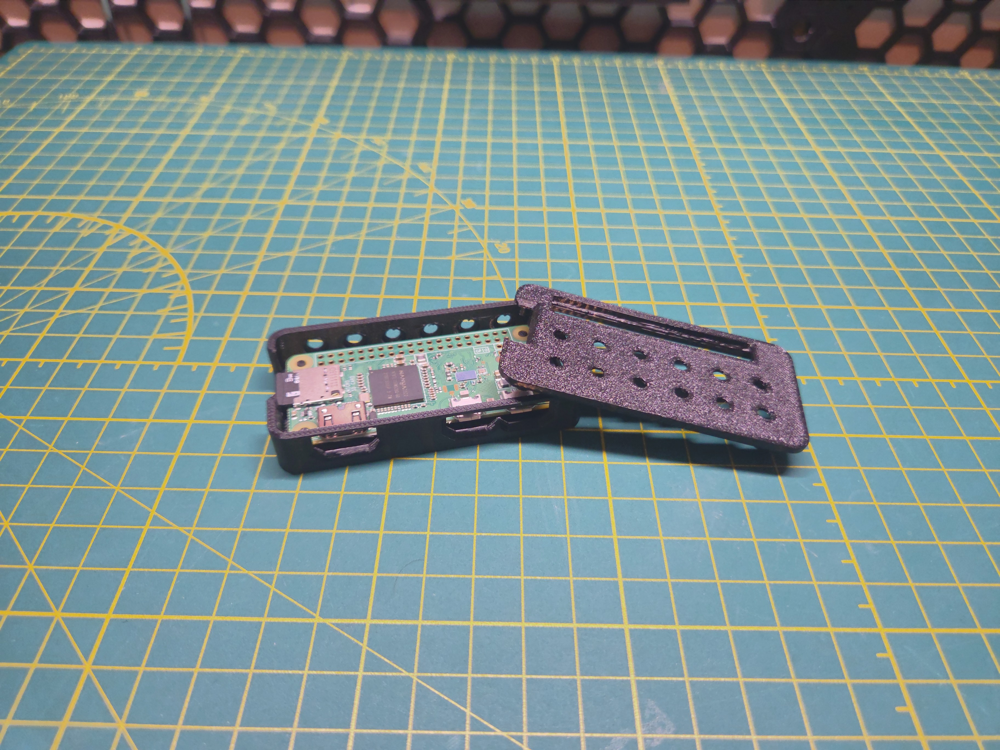
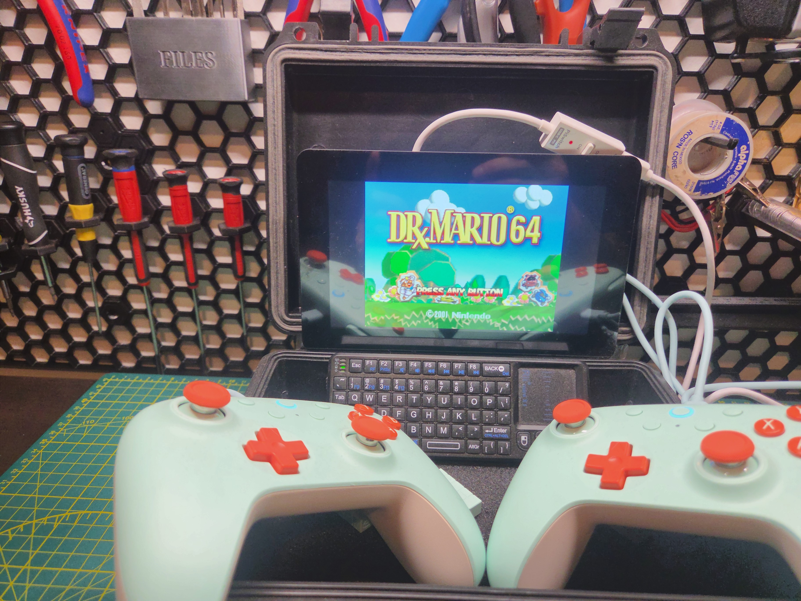

Raspberry Pi Projects

Credit Card Sized Single Board Computers for Fun and Education
Raspberry Pi is a family of single board computers. They come in a variety of shapes, sizes
and specifications. Ranging from They can be flashed with virtually any firmware and can be used for
a variety of applications. They are especially popular for use as retro gaming consoles, smart
home integration, and IoT connectivity. Below are a few of the projects that I have built using the
Raspberry Pi platform.

This my first attempt at a practical Raspberry Pi project. My girlfriend was always having trouble
connecting her phone to the Android Auto interface in her car, and it was somewhat inconvenient to
plug the phone into the car's USB port every time she wanted to connect the phone to the car. There
are a few companies that sell dongles that plug into the car and connect to the phone wirelessly, but
they cost nearly $100. I was able to buy the Raspberry Pi for about $25, 3d print the case for a few
cents, and download a custom firmware for free. The result was a fully functional wireless Android Auto
wireless adapter for a fraction of the cost of a commercially available one. Materials used:

There are numerous uses for Raspberry Pi computers, but one of the most popular is for using them to emulate
retro video games. There are several options for software, but I opted for Batocera, which is a gaming-specific
Linux distribution. I simply downloaded the .ios file, flashed it onto a microSD card, and was able to boot up
my new game emulator within a few minutes. I spent a few hours hunting the internet for game ROMS to play, and
now I have a credit-card sized gaming system that plays the entire library NES, SNES, and N64 games. It's a 90's
video game nerd's dream. The materials used were as follows:
- Raspberry Pi 5
- Raspberry Pi Touch Display 2 7" Touch Screen
- 2 x 8Bitdo Ultimate 2C Controllers
- Rii Mini X1 Wireless Bluetooth Keyboard
- Batocera Linux available at: https://batocera.org/
- Apache 1800 waterproof carrying case